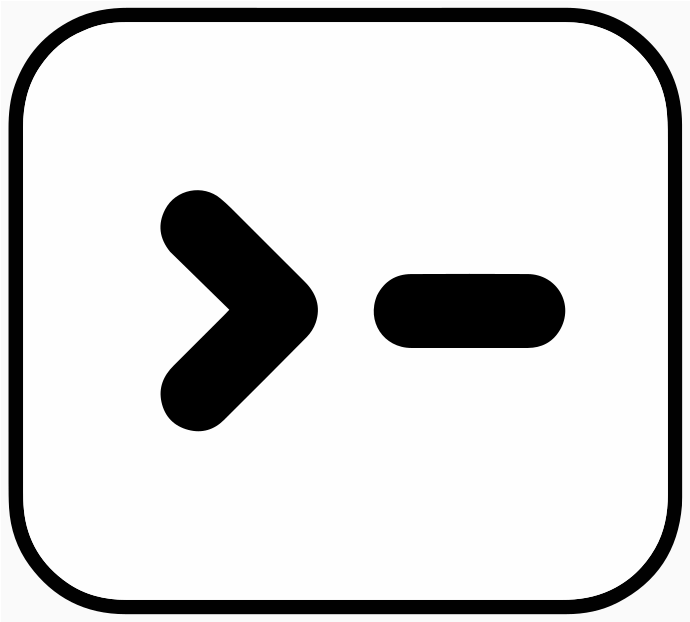

☰

WebCLI
☼
WebCLI Spec
v0.1-draft
What is WebCLI?
The 10 Canonical CLIs
Research & Evidence
Core Principles
Help Output
Flag Conventions
Subcommand Structure
Exit Codes
stdout / stderr
Specification
§1 Universal Flags
§2 Subcommand Structure
§3 Help Access
§4 Output Conventions
§5 JSON Output
§6 Verb Vocabulary
§7 Flag Naming
§8 Positional Arguments
§9 Config Layering
§10 Piping & Composability
§11 Summary
Why It Works
Get Involved
Articles
CLI Rankings
Top 10 CLIs (Pre-2024)
gws CLI Review
HubSpot CLI Review
Evidence Files
▶
cli_design_patterns.md
topclis.md
git
help
examples
bash
help
examples
curl
help
examples
npm
help
examples
docker
help
examples
pip
help
examples
grep
help
examples
ssh
help
examples
wget
help
examples
make
help
examples
·
view raw
·
← back to Research & Evidence